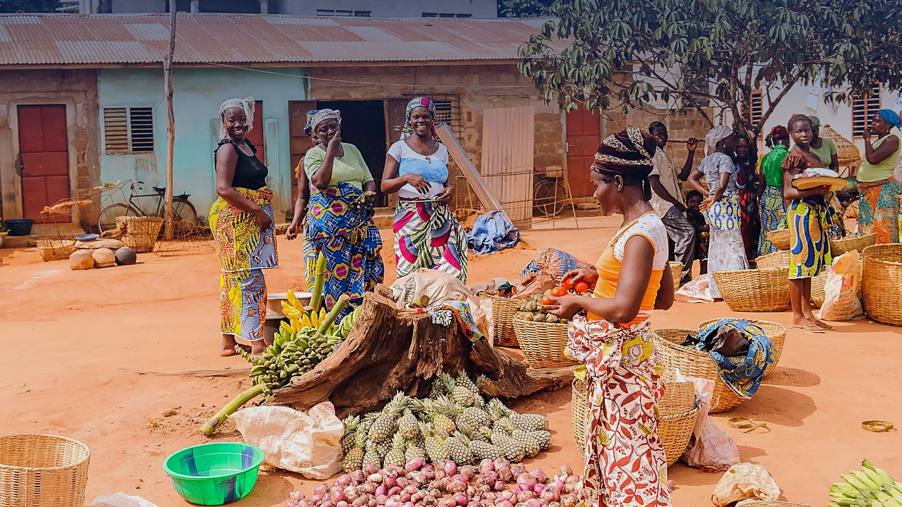
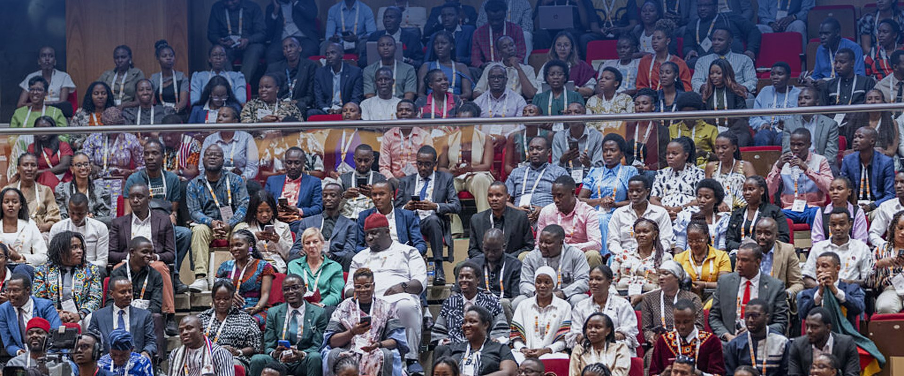
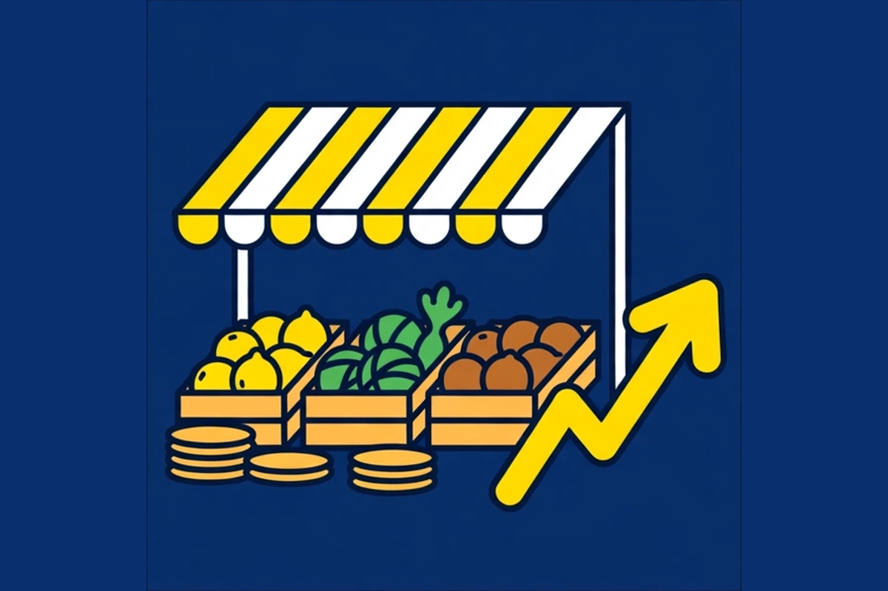
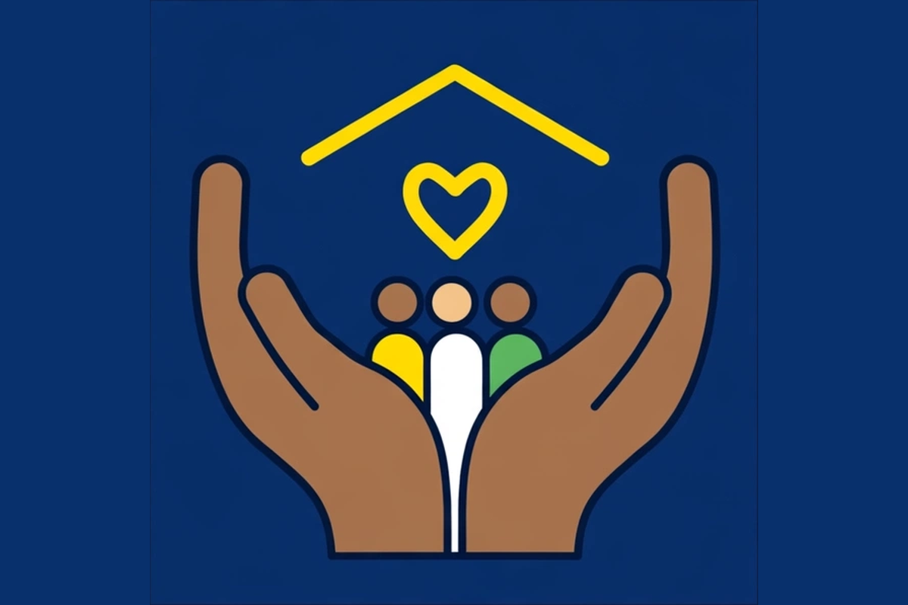
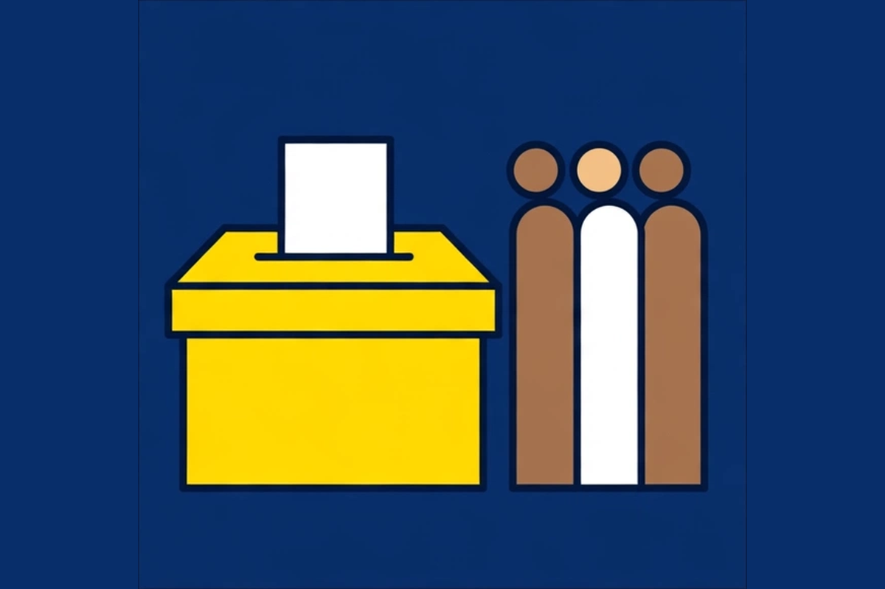

Rassembler
Réunir les Gabonais de toutes les provinces et de la diaspora autour d'un projet commun, au-delà des différences.
Front Démocratique Socialiste
Le FDS rassemble les Gabonaises et les Gabonais qui veulent bâtir un pays où le travail est reconnu, où la jeunesse a sa place et où les institutions servent le peuple.

Le FDS est né d'une conviction simple : la politique doit partir du quotidien des Gabonais — du marché, de l'école, de l'hôpital, du quartier — et y revenir avec des réponses concrètes.
Le mot du président

Gabonaises, Gabonais, chers compatriotes de la diaspora,
Le Front Démocratique Socialiste est né d'une certitude : notre pays ne se relèvera que par l'union de toutes ses forces — celles des quartiers et des villages, celles des jeunes qui entreprennent, et celles de nos compatriotes partis au loin sans jamais rompre le lien avec la terre natale.
À chacune et chacun d'entre vous, je le dis : votre place est ici, dans ce combat pacifique et démocratique pour un Gabon juste, libre et prospère. Rejoignez votre bureau, engagez-vous dans un pôle, et construisons ensemble le pays que nous devons à nos enfants.
Présence internationale
Du Gabon à la diaspora, le parti grandit chaque semaine : des bureaux ouverts, six pôles au travail et une parole qui circule.
La vie du parti
Nos bureaux, nos publications, nos activités sur le terrain et le lien avec la diaspora : chaque page du site t'emmène au cœur du parti.
Le FDS près de chez toi : retrouve nos bureaux et nos équipes locales, au Gabon comme à l'étranger.
Où que tu vives, garde le lien avec le Gabon et prépare ton retour avec le pôle Diaspora.
Communiqués, discours et documents officiels : la parole du parti, en toute transparence.

Rencontres, campagnes et actions de terrain, partout au Gabon, toute l'année.
Restons connectés
Retrouve le parti sur les réseaux sociaux, et rejoins la chaîne WhatsApp officielle pour recevoir les communiqués et les rendez-vous du FDS.
Le Parti
Notre histoire, notre mission, nos valeurs et notre organisation : tout ce qui fait le FDS, un parti au service du peuple gabonais.
Le Front Démocratique Socialiste est né de la rencontre de Gabonaises et de Gabonais — au pays comme dans la diaspora — convaincus que la politique doit recommencer par le peuple : écouter avant de décider, servir avant de diriger.
De cette conviction est né un parti rassembleur, qui grandit bureau après bureau, quartier après quartier, autour d'une devise simple : Respect, Intégrité, Loyauté.
Bâtir un Gabon juste, libre et prospère, où chaque citoyen compte et où les institutions travaillent pour le peuple. Trois chantiers guident notre action au quotidien :
Réunir les Gabonais de toutes les provinces et de la diaspora autour d'un projet commun, au-delà des différences.
Partir du quotidien des familles — emploi, école, santé, pouvoir d'achat — pour construire des propositions concrètes.
Agir en transparence et revenir régulièrement devant les citoyens pour expliquer, écouter et corriger.
La devise du FDS n'est pas un slogan : c'est la règle de conduite de chaque militant, de chaque élu, de chaque responsable du parti.
Respect de chaque personne, de chaque opinion et de la parole donnée. Le débat d'idées fait la force d'un parti démocratique.
La transparence dans l'action publique et dans la gestion des ressources. Servir le peuple, jamais se servir.
Loyauté envers le peuple gabonais et envers les engagements pris devant lui, dans les villes comme dans les villages.
Le FDS s'organise pour agir partout où vivent les Gabonais : six pôles d'action thématiques, des bureaux locaux au Gabon et des bureaux dans la diaspora. Chaque membre est rattaché à un bureau et peut rejoindre le pôle de son choix.
Diaspora et retour, Économie, Social, Communication, Citoyenneté, Institutions : six chantiers pour agir concrètement.
Un bureau national à Libreville, des équipes dans les provinces et des bureaux à l'étranger, dont FDS France et FDS Sénégal.
Chaque adhérent compte : crée ton compte, rejoins ton bureau local et participe aux décisions de ton pôle.
Nos pôles d'action
Chaque pôle rassemble des militants, des experts et des citoyens autour d'un chantier précis. Choisis le tien et passe à l'action avec nous.
Reconnecter les Gabonais de l'étranger à la vie du pays et préparer, avec eux, un retour réussi et utile au Gabon.

Soutenir l'entrepreneuriat local, l'emploi des jeunes et le pouvoir d'achat des familles gabonaises.

Défendre l'accès aux soins, à l'éducation et à des conditions de vie dignes pour chaque famille.
Informer, écouter et porter la voix des citoyens — sur le terrain comme sur les réseaux.

Promouvoir les droits, les devoirs et la participation de chaque Gabonais à la vie de la nation.
Œuvrer pour des institutions justes, transparentes et réellement au service du peuple.
Un pôle te parle ? Crée ton compte et rejoins-le dès ton adhésion.
Nos bureaux
Au Gabon comme à l'étranger, nos bureaux accueillent les militants, organisent la vie du parti et font le lien avec les citoyens.
Le bureau du Gabon est le siège national du Front Démocratique Socialiste, à Libreville. Il coordonne les activités du parti sur tout le territoire gabonais et constitue le lien entre les bureaux provinciaux, les six pôles d'action et la direction nationale.
Le bureau du FDS en France rassemble les Gabonaises et les Gabonais vivant en France. Il coordonne les activités du parti sur le territoire français, anime la diaspora et constitue le lien permanent entre les membres en France et le siège national de Libreville.
Le bureau du FDS au Sénégal anime la communauté gabonaise au Sénégal — étudiants, travailleurs et familles. Il coordonne les activités du parti en Afrique de l'Ouest et constitue le lien entre les membres sur place et le siège national de Libreville.
Tu vis dans un autre pays ? Le réseau FDS Diaspora te rattache au parti où que tu sois : il coordonne les membres répartis dans le monde entier et constitue leur lien avec le Gabon, en attendant l'ouverture d'un bureau dans ton pays de résidence.
Tu ne trouves pas ton bureau ? Crée ton compte : le bureau le plus proche de chez toi te contactera pour finaliser ton adhésion.
Les responsables qui animent ce bureau au quotidien, au service des membres et des citoyens.
Les six pôles du FDS sont actifs dans ce bureau : choisis ton chantier et engage-toi avec les équipes locales.
Crée ton compte de membre : tu seras rattaché à ce bureau et un responsable local te contactera pour finaliser ton adhésion et t'accueillir dans l'équipe.
S'inscrire et rejoindre ce bureau Tous les bureauxDiaspora
Étudiants, travailleurs, entrepreneurs : la diaspora gabonaise est une force pour le pays. Le FDS la rassemble et prépare, avec elle, le retour.
Reconnecter les Gabonais de l'étranger à la vie du pays : garder le lien avec les réalités du Gabon, participer aux débats du parti depuis l'étranger et préparer, pour celles et ceux qui le souhaitent, un retour réussi et utile au pays.
Nos bureaux FDS France et FDS Sénégal animent déjà la diaspora, et le réseau FDS Diaspora accueille les membres partout ailleurs dans le monde.
Rejoindre la diaspora FDS Nos bureaux à l'étrangerPublications
Communiqués, discours et documents officiels : tout ce que le FDS publie, en toute transparence.
Les positions et réactions officielles du FDS sur l'actualité du Gabon et la vie du parti.
Les prises de parole des responsables du parti, lors des rencontres, campagnes et événements publics.
Textes de référence, documents d'organisation et publications des six pôles d'action.
Les premières publications du parti seront mises en ligne ici très prochainement.
Activités
Rencontres, campagnes et actions citoyennes : le parti vit d'abord au contact des Gabonaises et des Gabonais.
Visites de quartiers, de villages et de marchés : écouter les citoyens là où ils vivent et travaillent.
Inscription sur les listes électorales, sensibilisation et mobilisation : faire vivre la citoyenneté au quotidien.
Chaque pôle d'action organise ses propres activités : forums, ateliers et actions solidaires, au Gabon et dans la diaspora.
Les prochaines activités du parti seront annoncées ici. Pour y participer près de chez toi, retrouve ton bureau.
Étudiant, travailleur, entrepreneur, membre de la diaspora : il y a une place pour toi au FDS. Crée ton compte de membre : un responsable de ton secteur te recontactera pour finaliser ton adhésion.
Ton adhésion commence par la création de ton compte de membre.
Crée ton compte — remplis le formulaire d'inscription avec tes informations personnelles et électorales.
Le bureau de ton secteur te contacte pour valider ton adhésion et t'accueillir.
Rejoins ton pôle d'action et participe à la vie du parti, où que tu sois.
Déjà adhérent ? Se connecter à l'espace membre
Crée ton compte de membre pour adhérer au parti, ou connecte-toi si tu es déjà adhérent pour retrouver tes documents et la vie de ton bureau local.
Pas encore de compte ?
Déjà adhérent ?
Informations légales
Les informations légales du site officiel du Front Démocratique Socialiste.
Ce site est édité par le Front Démocratique Socialiste (FDS), parti politique gabonais, dont le siège national est situé à Libreville, Gabon.
Devise du parti : Respect — Intégrité — Loyauté.
Ce site présente le parti, ses valeurs, ses six pôles d'action et ses bureaux, au Gabon comme dans la diaspora. Il permet aux sympathisants de créer un compte de membre et aux adhérents d'accéder à leur espace membre et à leur badge numérique.
L'ensemble des contenus de ce site — textes, visuels, emblème et logo du FDS — est la propriété du Front Démocratique Socialiste, sauf mention contraire. Toute reproduction, même partielle, sans autorisation préalable du parti est interdite.
Les informations recueillies via le formulaire d'adhésion (identité, coordonnées et informations électorales) servent uniquement à la gestion des membres du parti et à l'organisation de ses activités. Elles ne sont ni vendues ni cédées à des tiers. Tout membre peut demander la rectification ou la suppression de ses informations en s'adressant à son bureau FDS.
Pour toute question relative à ce site ou au parti, rapproche-toi du bureau FDS le plus proche de chez toi : voir la page Nos bureaux.
Connecte-toi pour retrouver ton badge numérique, tes informations et les actualités réservées aux membres du FDS.
Se connecterL'administration du site est réservée au compte administrateur du Front Démocratique Socialiste.
Back office
Gère les membres, les actualités et les offres affichées dans l'espace membre du FDS.
La cotisation est de 500 FCFA. Active le compte du membre une fois qu’elle est réglée.